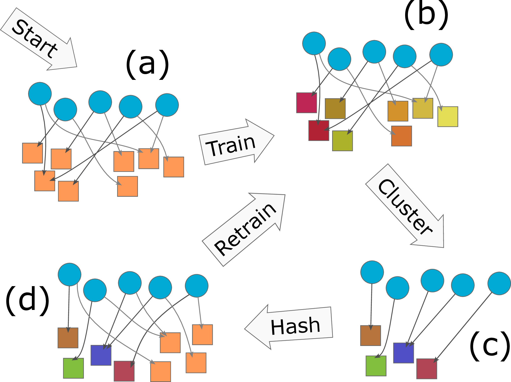

We train embedding tables with fewer parameters by combining multiple sketches of the same data, iteratively.
Clustering the Sketch: Dynamic Compression for Embedding Tables
GitHub Repository - ArXiv Paper - by Henry Tsang and Thomas Ahle
Embedding tables are used by machine learning systems to work with categorical features. In modern Recommendation Systems, these tables can be very large, necessitating the development of new methods for fitting them in memory, even during training. We suggest Clustered Compositional Embeddings (CCE) which combines clustering-based compression like quantization to codebooks with dynamic methods like The Hashing Trick and Compositional Embeddings. Experimentally CCE achieves the best of both worlds: The high compression rate of codebook-based quantization, but dynamically like hashing-based methods, so it can be used during training. Theoretically, we prove that CCE is guaranteed to converge to the optimal codebook and give a tight bound for the number of iterations required.
Example Code
import torch, cce
class GMF(torch.nn.Module):
""" A simple Generalized Matrix Factorization model """
def __init__(self, n_users, n_items, dim, num_params):
super().__init__()
self.user_embedding = cce.make_embedding(n_users, num_params, dim, 'cce', n_chunks=4)
self.item_embedding = cce.make_embedding(n_items, num_params, dim, 'cce', n_chunks=4)
def forward(self, user, item):
user_emb = self.user_embedding(user)
item_emb = self.item_embedding(item)
return torch.sigmoid((user_emb * item_emb).sum(-1))
def epoch_end(self):
self.user_embedding.cluster()
self.item_embedding.cluster()
Other than the Clustered Compositional Embedding, the library also contain many other compressed embedding methods, such as
ce.RobeEmbedding,
ce.CompositionalEmbedding,
ce.TensorTrainEmbedding and
ce.DeepHashEmbedding.
Results
We adapted the Deep Learning Recommendation Model (DLRM) model to use CCE. Even reducing the number of parameters by a factor 8,500, we were able to get the same test loss (Binary cross entropy) as the full DLRM model.

Note how previous compressed training methods were not significantly better than just using the hashing trick. Also note that most compressed embeddings actually achieve better loss than the full embedding table of the baseline. This indicates the reduced number of parameters is useful as regularization. However, post-training compression methods, like Product Quantization, are unable to take advantae of this.
Method
Single iteration of CCE:
- Starting from a random embedding table, each ID is hashed to a vector in each of 2 small tables.
- During training, the embedding of an ID is taken to be the mean of the two referenced code words.
- After training for an epoch, the vectors for all (or a sample of) the IDs are computed and clustered. This leaves a new small table in which similar IDs are represented by the same vector.
- We can choose to combine the cluster centers with a new random table (and new hash function), after which the process can be repeated for an increasingly better understanding of which ID should be combined.
For more details, see cce/cce.py in the Github repository.
Key Takeaways
Context: Modern Recommendation Systems require large embedding tables, challenging to fit in memory during training.
Solution: CCE combines hashing/sketching methods with clustering during training, to learn an efficent sparse, data dependent hash function.
Contributions:
- CCE fills the gap between post-training compression (like Product Quantization) and during-training random mixing techniques (like Compositional Embeddings).
- CCE provably finds the optimal codebook with bounded iterations, at least for linear models.
- CCE experimentally outperforms all other methods for training large recommendation systems.
- We provide a large, standardized library of related methods available on GitHub.
Citation
@inproceedings{tsang2023clustering,
title={Clustering Embedding Tables, Without First Learning Them},
author={Tsang, Henry Ling-Hei and Ahle, Thomas Dybdahl},
booktitle={Advances in Neural Information Processing Systems (NeurIPS)},
year={2023}
}